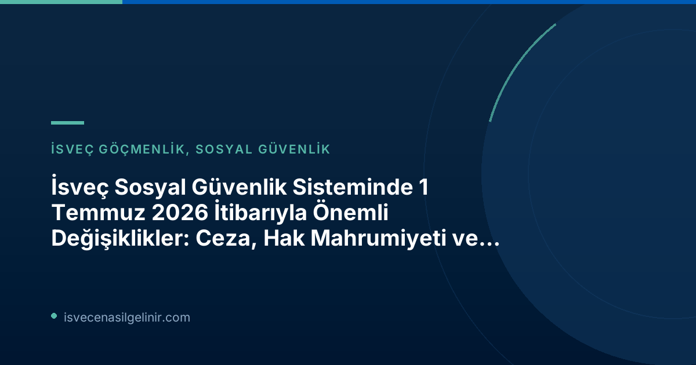

İsveç Riksdagen (Parlamentosu) tarafından onaylanan ve 1 Temmuz 2026 tarihinden itibaren yürürlüğe giren bu üç yeni yasal düzenleme, İsveç sosyal güvenlik politikasında önemli bir dönüm noktasını işaret ediyor. Değişiklikler, hem sistemin daha şeffaf ve adil işlemesini sağlamayı hem de bireylerin sorumluluklarını artırmayı hedefliyor.
Hatalı Ödemelerde Yeni Yaptırımlar: Yaptırım Ücreti (Sanktionsavgift)
Sosyal güvenlik sistemlerinde hatalı ödemeler, hem kamu kaynakları üzerinde yük oluşturmakta hem de sisteme olan güveni zedelemektedir. Bu durumun önüne geçmek amacıyla, İsveç Hükümeti yeni bir yaptırım ücreti uygulamasını hayata geçirdi.
Nedir ve Kimi Kapsar?
1 Temmuz 2026 itibarıyla, Försäkringskassan (İsveç Sosyal Sigorta Kurumu) ve Pensionsmyndigheten (İsveç Emeklilik Kurumu), yanlış bilgi veren veya değişen koşulları bildirmeyen ve bu nedenle hatalı ödemeye neden olan kişilere yaptırım ücreti uygulama yetkisine sahip oldu.
Amacı ve Hesaplanması
Bu uygulamanın temel amacı, hatalı ödeme sayısını azaltmak ve refah sistemlerine olan güveni güçlendirmektir. Yaptırım ücreti, hatalı ödenen ve geri ödenmesi gereken miktarın yüzde 25'i olarak belirlenmiştir. Ancak, bu ücretin her durumda en az 2.368 SEK olacağı bir alt sınır da bulunmaktadır (fiyat baz tutarının yüzde 4'ü).
| Uygulama Alanı | Yaptırım Oranı | Minimum Yaptırım Ücreti | Yürürlük Tarihi |
|---|---|---|---|
| Yanlış bilgi verme / Değişiklik bildirmeme | Hatalı ödenen miktarın %25'i | 2.368 SEK (Fiyat Baz Tutarı'nın %4'ü) | 1 Temmuz 2026 |
Bu düzenleme ile, bireylerin sosyal güvenlik kurumlarına karşı daha dikkatli ve sorumlu davranmaları teşvik edilmektedir. Detaylı bilgi için Försäkringskassan'ın resmi web sitesindeki ilgili bölümleri incelemeniz tavsiye edilir.
Kötüye Kullanımın Önüne Geçmek İçin: Hak Mahrumiyeti (Bidragsspärr)
Sosyal güvenlik sisteminin kötüye kullanımı, yalnızca kaynakları tüketmekle kalmaz, aynı zamanda gerçekten ihtiyacı olan kişilerin haklarına erişimini de zorlaştırır. Bu soruna karşı daha güçlü bir önlem olarak, "hak mahrumiyeti" adı verilen yeni bir yaptırım türü devreye sokuluyor.
Hak Mahrumiyeti Nedir ve Ne Kadar Sürer?
Bu yeni yaptırım, bilinçli olarak veya ağır ihmal sonucu yanlış ödemelere neden olan kişilerin belirli ödeneklerden belirli bir süre boyunca mahrum bırakılmasını öngörüyor. Hak mahrumiyetinin süresi, durumun ciddiyetine göre birkaç aydan üç yıla kadar değişebilecektir. Riksdagen, bu önlemle sosyal güvenlik sisteminin sistematik olarak kötüye kullanılmasına karşı daha güçlü bir koruma sağlamayı hedeflemektedir.
Önemli Bilgi: Hak Mahrumiyeti (Bidragsspärr)
- Tanım: Bilinçli veya ağır ihmal sonucu hatalı ödemeye neden olanların belirli ödeneklerden geçici olarak men edilmesi.
- Süre: Birkaç aydan üç yıla kadar değişebilir.
- Amaç: Sosyal güvenlik sistemini sistematik kötüye kullanıma karşı korumak.
Bu değişiklik, İsveç'in refah devletinin temel prensiplerini koruma ve sürdürülebilirliğini sağlama konusundaki kararlılığını göstermektedir. İsveç'te yaşam ve haklar hakkında daha fazla bilgi için sverigemedborgarskapsprov.com sizin için değerli bir kaynak olacaktır.
Ebeveyn Parası Başvurusunda Kolaylık: Ön Bildirim Şartı Kalktı
Sosyal güvenlik alanındaki diğer iki değişiklik yaptırım niteliği taşırken, üçüncü değişiklik ebeveynler için süreci basitleştiren olumlu bir gelişmedir.
Eski Uygulama ve Yeni Düzenleme
1 Temmuz 2026 tarihinden itibaren, ebeveyn parası (föräldrapenning) başvurularında önceden bildirim yapma şartı kaldırıldı. Eskiden, ebeveyn iznine ayrılmak isteyen kişilerin önce bildirimde bulunması, ardından ebeveyn parası için başvuru yapması gerekiyordu. Artık, doğrudan Försäkringskassan'a ebeveyn parası başvurusu yapmak yeterli olacak.
Bu, ebeveynlerin bürokratik yükünü azaltarak, çocuklarıyla geçirecekleri zamana odaklanmalarını kolaylaştırmayı hedefleyen pratik bir düzenlemedir. Hükümetin bu adımı, aile dostu politikaların bir yansıması olarak değerlendirilebilir.
Sonuç ve Önemli Tavsiyeler
İsveç Sosyal Güvenlik Sistemi'nde 1 Temmuz 2026 itibarıyla yürürlüğe giren bu değişiklikler, hem bireysel sorumlulukları artıran yaptırımlar hem de ebeveynlere yönelik kolaylaştırıcı bir düzenleme içermektedir. Özellikle yanlış beyan veya bildirim eksikliği gibi durumların ciddi sonuçları olabileceğini unutmamak hayati önem taşımaktadır.
İsveç'te yaşayan veya yaşamayı düşünen herkesin, hak ve yükümlülüklerini yakından takip etmesi gerekmektedir. Resmi kurumların (Försäkringskassan, Pensionsmyndigheten) duyurularını düzenli olarak kontrol etmek, herhangi bir mağduriyet yaşamamak adına atılacak en önemli adımlardan biridir. Belirsiz durumlarda her zaman ilgili kurumlardan doğrudan bilgi almanız tavsiye edilir.
Referanslar
- Försäkringskassan – Lagändringar 1 juli som berör socialförsäkringen: https://www.forsakringskassan.se/nyhetsarkiv/nyheter-press/2026-07-01-lagandringar-1-juli-som-beror-socialforsakringen
- İsveç Vatandaşlık Sınavı Hakkında Bilgi: sverigemedborgarskapsprov.com
İsveç'e Göçmenlik ve Adaptasyon Sürecinizde Yanınızdayız!
İsveç'te yaşamak, çalışmak veya eğitim almak gibi konularda detaylı bilgi ve danışmanlık hizmeti almak ister misiniz? İsveç sosyal güvenlik sistemi, oturum izinleri, vatandaşlık süreci ve daha fazlası hakkında merak ettikleriniz için bizimle iletişime geçin.